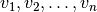

A new project is always created by running the script new_project.py. The script requires a project-name and two input files: a regulatory graph file and a initial constraints file. The project-name and the input file names are specified in the header of the script new_project.py by editing the respective lines:
new_project.py:
project_name = None regulatory_graph = None initial_constraints = None
The script will first create a new folder, with the given project name, and move it inside the tools projects folder. For reference, a copy of the input files is also moved into the new project folder. Finally a log file, with name <project-name>_log.txt, is created in which all performed tasks are recorded. The constraints file is then translated to a finite domain constraint programming problem and passed to the CP solver MiniZinc. The solver will enumerate all solutions, i.e., all parametrizations, that satisfy the initial constraints and store them in a sqlite3 database with the name <project-name>.db. To call MiniZinc, the path to its executable must be specified in the file preferences.py by replacing None with the path string:
preferences.py:
minizinc_path = None
In the next sections we explain how regulatory graphs and initial constraints are specified in text files:
Contents of Section 1: Initial Parametrizations
In Appendix A we defined a regulatory graph to consist of “anonymous” components . In real applications we like to give names to the components. Hence, we define the token “name”, that may be as short as one character, but must be alphanumeric and start with a letter:
A regulatory graph file is a text file that lists all interactions of the graph, one per line, followed by all thresholds of the interaction. The regulator, target and thresholds must be seperated by a comma.
Regulatory graph file
graph_file ::= interaction+ interaction ::= name ',' name ',' threshold {',' threshold} threshold ::= 1,2,3,...Running example: The regulatory graph file is:
# Comments begin with a hash v1, v1, 1 v1, v2, 1, 2 v2, v1, 1 v2, v2, 2
Like regulatory graphs, initial constraints are specified in a text file. An initial constraint is a Boolean expression over the predefined predicates of Appendix B: Parameter Constraint Language.
Initial constraints file
constraints_file ::= constraints* constraints ::= constraint | constraints and constraints | constraints or constraints | not constraints constraint ::= inequality_abs | inequality_rel | identity | multiplex | edge_label | subgraph | path# Comments begin with a hash Observable(v1, v1, 1) and Observable(v1, v2, 1) and Observable(v1, v2, 2) and ActivatingOnly(v2, v1, 1) and Some(True[v1] = 0) and Some(True[v1] = 2) and Multiplex(v1>0 and v2>0,v1=0,v2=0: v2)